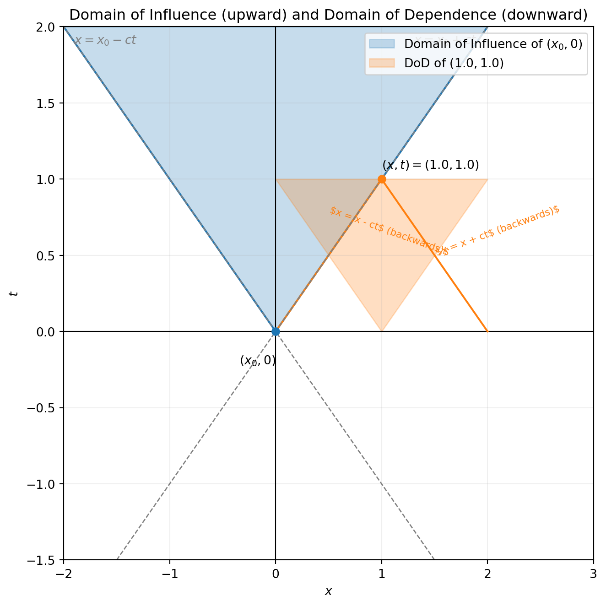

6 Level 5 — Hyperbolic PDEs: Wave Equation
Pavni: Acharya, we’ve studied the heat equation. From theory we know that it seems to spread information everywhere. Does every PDE behave like that?
Acharya: That’s a good observation, Pavni. Not every PDE diffuses information infinitely fast like the parabolic heat equation.
Some equations describe situations where information or disturbances travel at a finite speed — like waves or moving traffic.
Pavni: So these are called hyperbolic equations?
Acharya: Exactly. Hyperbolic equations are the mathematical way of describing signals or quantities that move through a medium rather than diffuse.
For example — a vibrating string, sound waves in air, or even cars moving on a road.
Pavni: Interesting! But why are they so different from diffusion equations like the heat equation?
Acharya: Because diffusion equations allow disturbances to spread instantaneously everywhere — a small change at one point affects all others immediately.
That’s called infinite propagation speed.
But hyperbolic equations restrict influence to certain paths in the \((x,t)\)-plane, called characteristics.
Information travels only along these paths at a finite speed.
Pavni: That sounds more physical. After all, signals, sound, or cars don’t move infinitely fast!
Acharya: Exactly. Let’s begin with a simple and familiar example — traffic flow.
It beautifully captures the idea of conservation and finite-speed motion.
6.1 🚗 The Traffic Flow Model
Pavni: So, where do we begin?
Acharya: Let’s define some quantities.
- \(\rho(x,t)\): density of cars at position \(x\) and time \(t\) (cars/km)
- \(v(x,t)\): average speed of cars (km/h)
- \(q(x,t)\): flow rate — number of cars passing a point per unit time (cars/hour)
Pavni: So \(q\) must depend on both how many cars there are and how fast they move?
Acharya: Precisely. That leads us to the simple physical relation: \[ q = \rho v. \]
💡 Why \(q = \rho v\)?
If a small segment of road of length \(\Delta x\) contains \(\rho \, \Delta x\) cars,and each car moves with velocity \(v\), then in time \(\Delta t\) each car covers \(v \, \Delta t\) km.
So, the number of cars passing a fixed point in time \(\Delta t\) is
\[ (\rho \, \Delta x) \cdot \frac{v \, \Delta t}{\Delta x} = \rho v \, \Delta t. \] Dividing by \(\Delta t\) gives \(q = \rho v\).
6.2 ⚙️ Conservation of Cars
Acharya: Now, think of a small stretch of road between \(x_1\) and \(x_2\).
Cars can only leave or enter through the ends.
\[ \frac{d}{dt}\int_{x_1}^{x_2} \rho(x,t)\,dx = q(x_1,t) - q(x_2,t). \]
Pavni: That looks like conservation of mass!
Acharya: Exactly — just conservation of the number of cars.
The total number of cars in the interval changes only because of the net flow at the boundaries.
Now, let’s use the Fundamental Theorem of Calculus to convert this integral form into a local differential equation.
By the Fundamental Theorem of Calculus, \[ q(x_2,t) - q(x_1,t) = \int_{x_1}^{x_2} q_x(x,t)\,dx. \]
Substitute this into our conservation statement: \[ \frac{d}{dt}\int_{x_1}^{x_2} \rho(x,t)\,dx = -\int_{x_1}^{x_2} q_x(x,t)\,dx. \] Assuming \(\rho\) is smooth enough to interchange differentiation and integration: \[ \int_{x_1}^{x_2} \rho_t(x,t)\,dx = -\int_{x_1}^{x_2} q_x(x,t)\,dx. \]
Combine both integrals: \[ \int_{x_1}^{x_2} \big[\rho_t(x,t) + q_x(x,t)\big]\,dx = 0. \]
Acharya: Now, Pavni, what does this equation tell us?
Pavni: It says that the integral of \(\rho_t + q_x\) over any interval is zero.
Acharya: Exactly! And that can only happen if the integrand itself is zero everywhere.
Hence, we get the local conservation law: \[
\boxed{\rho_t + q_x = 0.}
\]
Pavni: So the integral form expresses the total number of cars in a segment being conserved,
and this differential form expresses that conservation at every point on the road!
Acharya: Perfectly said. This is the basic conservation law for one-dimensional flow.
Next, if we assume each car moves at a constant speed \(a\), we’ll get the linear advection equation.
Pavni: So this describes a traffic pattern moving forward without changing its shape?
Acharya: Exactly. The entire profile of car density just shifts rightward with speed \(a\).
6.3 ✏️ Try to Predict
Acharya: Before solving it, can you guess how the density will evolve if initially the density is a bump — say, \[ \rho(x,0) = e^{-x^2}? \]
Pavni: I think it will move to the right, keeping its shape.
Acharya: Perfect intuition. We’ll now confirm this mathematically using characteristics — special curves along which information travels.
6.4 🌊 Characteristics and the Solution of the Linear Advection Equation
Pavni: Acharya, now that we have derived the equation
\[
\rho_t + a\rho_x = 0, \quad a > 0,
\]
for cars moving at constant speed, how do we actually find \(\rho(x,t)\) from this?
Acharya: Excellent question. This equation may look simple, but it contains a beautiful idea — that information travels along certain paths in the \((x,t)\)-plane. These paths are called characteristics.
6.4.1 Deriving the Characteristic Curves
Acharya: Let’s think of \(\rho\) as a function of both \(x\) and \(t\).
Suppose we move along a curve \(x = x(t)\) in the \((x,t)\)-plane.
By the chain rule, the total derivative of \(\rho\) along that curve is \[
\frac{d\rho}{dt} = \rho_t + \frac{dx}{dt}\rho_x.
\]
Now, if we choose \(\dfrac{dx}{dt} = a\), then \[ \frac{d\rho}{dt} = \rho_t + a\rho_x = 0. \]
That means \(\rho\) is constant along any curve that satisfies \(\dfrac{dx}{dt} = a\).
Pavni: So those are the characteristic curves?
Acharya: Exactly! Integrating \(\dfrac{dx}{dt} = a\) gives \[ x = a t + x_0, \quad \text{or} \quad x - a t = x_0 = \text{constant}. \]
Each line \(x - a t = \text{constant}\) is a characteristic line.
6.4.2 The Meaning of Characteristics
Pavni: What does it mean that \(\rho\) is constant along these lines?
Acharya: It means that the value of \(\rho\) at time \(t\) and position \(x\)
is exactly the same as its value at the point where that characteristic line started on the \(x\)-axis (that is, at time \(t=0\)).
So, \[ \rho(x,t) = \rho_0(x - a t), \] where \(\rho_0(x)\) is the initial density at \(t=0\).
Pavni: Oh! So the initial profile just shifts by \(a t\)?
Acharya: Exactly — it moves to the right if \(a>0\) and to the left if \(a<0\).
No change in shape — pure translation.
6.4.3 Verifying the Solution
Pavni: Let’s check if this really satisfies the PDE.
Acharya: Sure! Let \(\rho(x,t) = \rho_0(x - a t)\).
Then \[
\rho_t = -a\rho_0'(x - a t), \quad \rho_x = \rho_0'(x - a t).
\] Substitute into \(\rho_t + a\rho_x = 0\): \[
(-a\rho_0') + a\rho_0' = 0.
\] ✅ It satisfies the equation perfectly.
6.4.4 Understanding Finite Propagation Speed
Acharya: The key property of this equation is that information moves at a finite speed.
If a disturbance is initially present only between \(x=0\) and \(x=1\),
then at time \(t\) it will be found only between \(x=a t\) and \(x=1+a t\).
Every point outside this region remains unaffected.
Pavni: So information doesn’t spread instantly like in the heat equation?
Acharya: Exactly. In the heat equation, even a small bump affects the whole line immediately — infinite propagation speed.
But here, the influence travels only along straight lines \(x - a t = \text{constant}\) — that’s finite-speed propagation.
6.4.5 Example
Let’s take an initial density \[ \rho_0(x) = \begin{cases} 1, & 0 < x < 1, \\ 0, & \text{otherwise}. \end{cases} \]
Then \[ \rho(x,t) = \begin{cases} 1, & a t < x < 1 + a t, \\ 0, & \text{otherwise}. \end{cases} \]
Pavni: So the block of cars just moves forward as a group?
Acharya: Exactly — like a moving traffic wave with constant shape.
6.4.6 Visualizing Characteristics
Each characteristic line shows where information travels:
t ↑
|
| / / / / / / /
| / / / / / / /
| / / / / / / /
|____/____/____/____/____/____/____/→ x
6.5 🕸️ Domain of Dependence and Domain of Influence
Pavni: Acharya, you mentioned earlier that information in hyperbolic equations travels along characteristics. But how exactly do we describe which parts of the initial data influence the solution at a given point?
Acharya: Excellent question, Pavni. To answer that, we introduce two key ideas — the domain of dependence and the domain of influence. These describe how information moves through space and time.
6.5.1 What do these mean?
Acharya: Let’s begin intuitively.
The domain of dependence (DoD) of a point \((x,t)\) is the set of points in the initial data that can affect the solution at \((x,t)\).
In other words: Which initial points influence the value here?The domain of influence (DoI) of a point \((x_0,0)\) is the set of space–time points \((x,t)\) that can be affected by that initial point.
In other words: Where does the information starting at \(x_0\) go?
Pavni: So the DoD looks backward in time, and the DoI looks forward?
Acharya: Exactly. They’re like mirror images of each other.
For hyperbolic PDEs, these regions are bounded by characteristics — the paths along which information travels at finite speed.
6.5.2 Example 1: Linear Advection
Pavni: Let’s try this with the advection equation again:
\[
u_t + a\,u_x = 0, \quad u(x,0) = u_0(x).
\]
Acharya: Good. The characteristics are the straight lines \[ x - a t = \text{constant}. \]
So each point \((x,t)\) connects to exactly one point on the \(x\)–axis: \(x_0 = x - a t\).
Pavni: So the value \(u(x,t)\) depends only on \(u_0(x - a t)\)?
Acharya: Exactly. That means:
- The domain of dependence of \((x,t)\) is the single point \(x_0 = x - a t\).
- The domain of influence of an initial point \((x_0,0)\) is the straight line \(x = x_0 + a t\).
Pavni: So for advection, both DoD and DoI are just lines — not regions?
Acharya: Right. A single characteristic line carries all the information.
This is why the advection equation has such a clean propagation behavior — each point of initial data simply moves at speed \(a\) without interacting with others.
6.5.3 Example 2: The 1-D Wave Equation
Pavni: What happens for the wave equation?
\[
u_{tt} = c^2 u_{xx}.
\]
Acharya: Ah, this one is a bit richer. The general solution is given by d’Alembert’s formula: \[ u(x,t) = F(x - c t) + G(x + c t). \]
Pavni: So now we have two families of characteristics — one moving right, one left?
Acharya: Precisely! For this equation: - Right-moving characteristics: \(x - c t = \text{constant}\)
- Left-moving characteristics: \(x + c t = \text{constant}\)
Now, to find the value at \((x,t)\), you need both \(F\) and \(G\) — meaning information from two points on the initial line: \[ x - c t \quad \text{and} \quad x + c t. \]
Pavni: So the DoD of \((x,t)\) is the interval between those two points?
Acharya: Yes. The domain of dependence is
\[
[x - c t,\, x + c t].
\]
And the domain of influence of an initial point \((x_0,0)\) is the cone-shaped region.